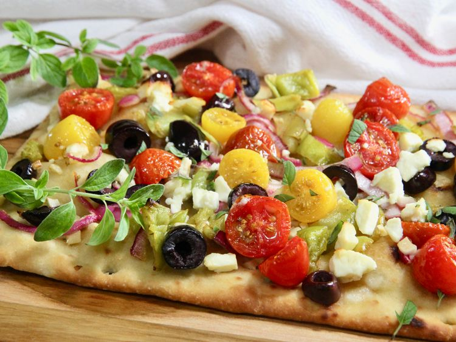

Home
Mediterranean Flatbread

Description
These Mediterranean flatbreads are packed with fresh flavor, piled with tomatoes, Kalamata olives, red onion, pepperoncini, and feta cheese. They look a little fancy, but are uncomplicated and perfect for a quick meal or appetizer.
Ingredients
- 2 flatbreads, purchased or homemade
- 1/4 cup extra-virgin olive oil
- 3 garlic cloves, finely chopped
- 2 cups halved cherry or grape tomatoes
- 1/2 cup sliced Kalamata olives
- 1/2 red onion, thinly sliced
- 1/3 cup sliced pepperoncini
- 3 tablespoons crumbled feta cheese, or more to taste
Directions
- Preheat the oven to 425 degrees F (220 degrees C).
- Combine olive oil and garlic in a small bowl. Lightly brush a little garlic olive oil over the flatbreads.
- Add tomatoes, olives, onion, and pepperoncini to a bowl; drizzle with remaining garlic olive oil, and gently combine.
- Evenly top flatbreads with the tomato mixture, sprinkle with feta cheese, and place on a baking sheet.
- Bake. in the preheated oven until flatbreads are starting to turn golden brown, 12 to 15 minutes. Sprinkle with chopped oregano and serve.